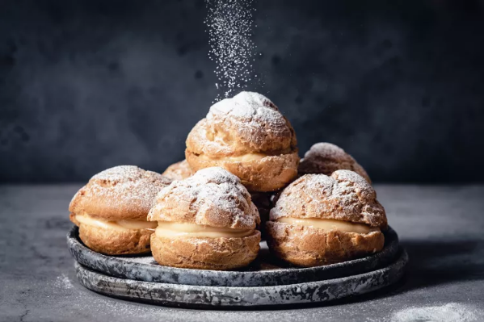

Shu Cream

Mashe Burnedead's favourite food
Recipe Ingredients
- 2 eggs
- 3 tablespoons butter
- 2 teaspoons sugar
- 1/2 cup water
- 1/2 cup flour
- 2 egg yolks
- 1/2 cup sugar
- 2 tablespoons flour, sifted
- 1 cup warm milk
- 1 tablespoon melted butter
Recipe Instructions
- Pre heat oven to 375 F
- Prepare baking sheet with parchment paper or silicone sheet
- Beat 2 eggs
- Place butter, sugar, and water in a pan and bring to boil over medium heat
- Add flour to the pan and stir quickly
- Remove pan from heat and add beaten egg mixture
- Stir well
- Fill a piping bag with the dough
- Squeeze 8 small mounds of dough onto the baking sheet
- Bake for 30 minutes, and let puffs cool
- Cut puffs in half horizontally
- Mix egg yolks and sugar in a pan and stir well
- Add flour to pan and mix
- Gradually add warm milk to mixture
- Place pan on low heat and stir constantly until it has thickened
- Remove from heat and add melted butter, mix well
- Add the cream to the puffs using a piping bag
Back to Homepage